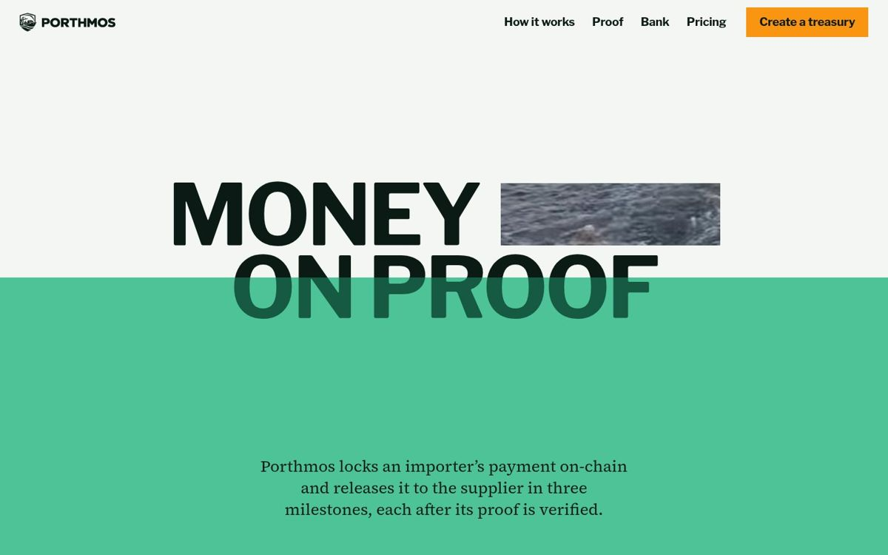
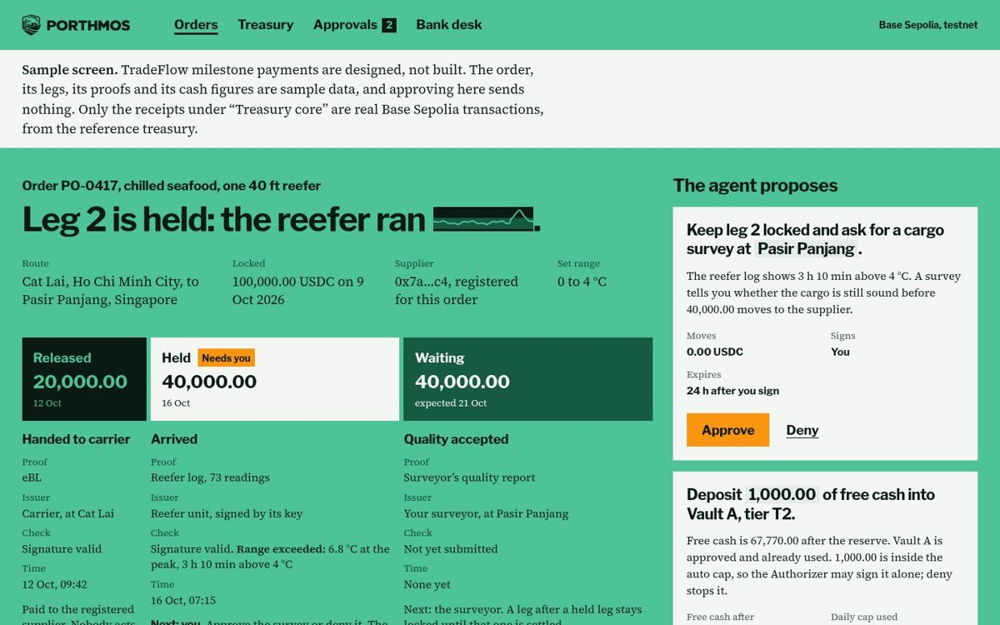
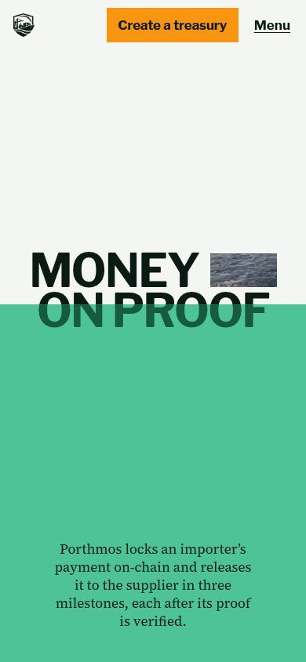
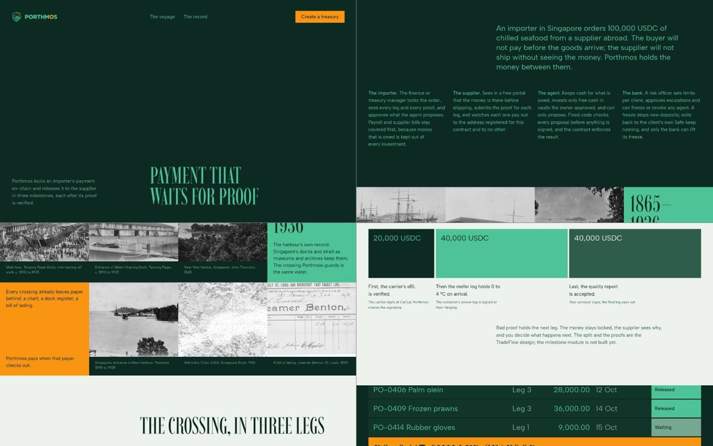
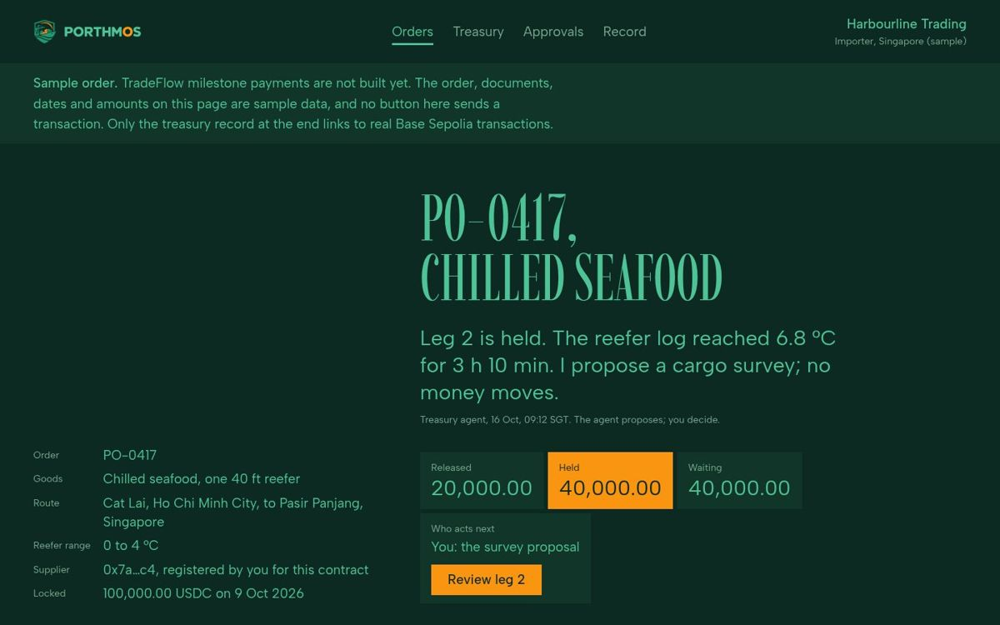
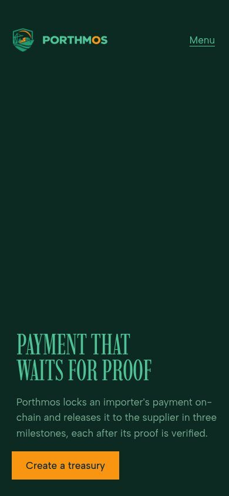
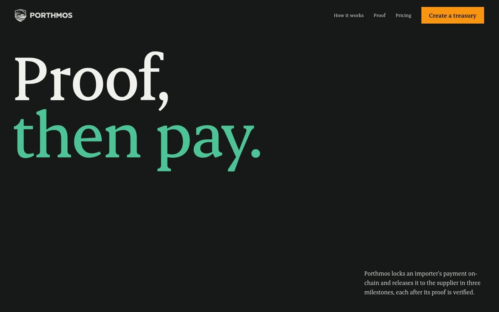
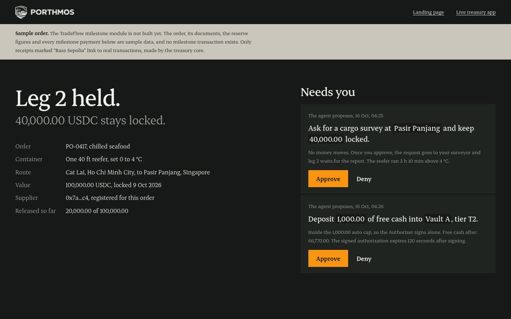
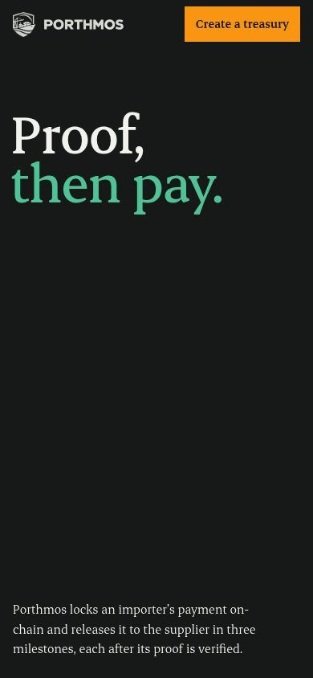

Each option has a landing page and the importer's TradeFlow order screen, built in the same style. Open both, on desktop and on your phone, then pick one. The milestone order in every option is sample data: TradeFlow is designed, not built yet. Receipts marked Base Sepolia link to real transactions from the treasury core.
Green #4EC397Orange #F99510
A. The sentence is the layout
A bold, bright page. The headline reads "Money [moving water] on proof": the clip of water is the strait the payment crosses, and the line between paper and green is the waterline.

Landing, desktop

Order screen

Phone
Strong
Uses the brand green the most; closest to the logo.
Friendly and modern, feels like a startup product.
Order screen is the clearest of the three to scan.
Weak
Least "bank-grade"; may read as playful to WeBank judges.
Lots of green can tire the eye on long app sessions.
Type: Libre Franklin and Source Serif 4. Gate: 0 fails at 1440, 768 and 390.
A voyage report for one order, on deep harbour green. The 1936 Admiralty chart of the Singapore Strait and an 1890 bill of lading become its plates; every heading keeps to one line at 42% of the width, like a ship keeping to the channel.

Landing, desktop

Order screen

Phone
Strong
Most institutional; fits a trade-finance product and bank judges.
Strongest pictures: real Singapore harbour history.
Tells the importer, supplier, agent and bank story in one page.
Weak
The hero's top half is empty on desktop; the chart plate needs to show there.
Tall condensed headings are harder to read in the app.
Type: Imbue and Albert Sans. Gate: 0 fails on both pages; text passes WCAG AA.
Charcoal and off-white, built from big serif type. The contract's own refusal words, Released, Held, BadSignature, NonceUsed, PriceOutOfBand and Frozen, are the design, and each one links to its real refused transaction on Base Sepolia.

Landing, desktop

Order screen

Phone
Strong
Puts our real on-chain proof at the centre: judges can click every refusal.
Calm and premium; easiest to extend into the full app.
Cleanest pass of the taste checks (0 fails, 0 warnings on the landing page).
Weak
Uses the brand green least; the logo carries less of the page.
Fewer pictures, so the trade story is told mostly in words.
Type: Erode. Gate: 0 fails, 0 warnings on the landing page.